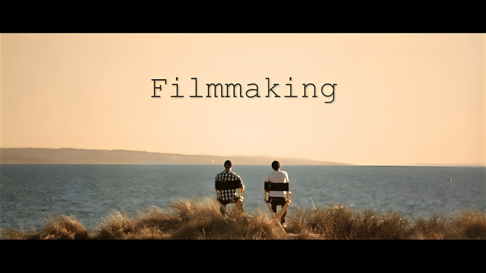
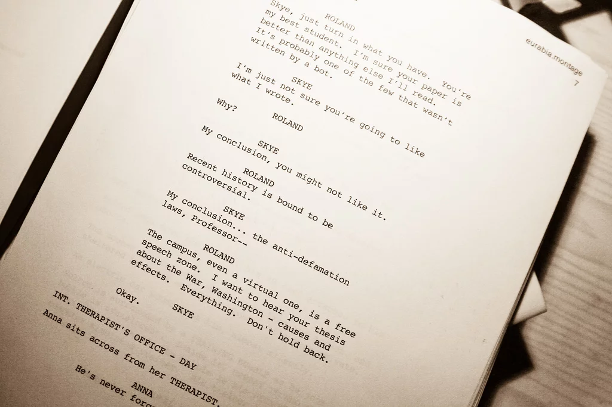
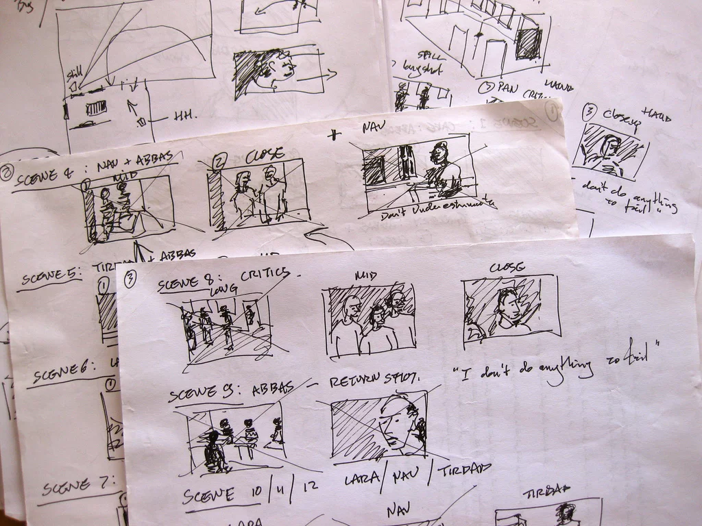
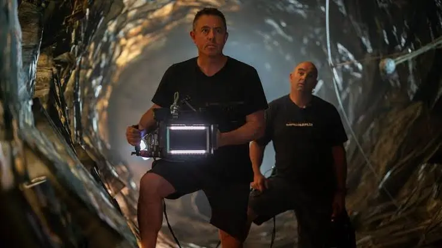
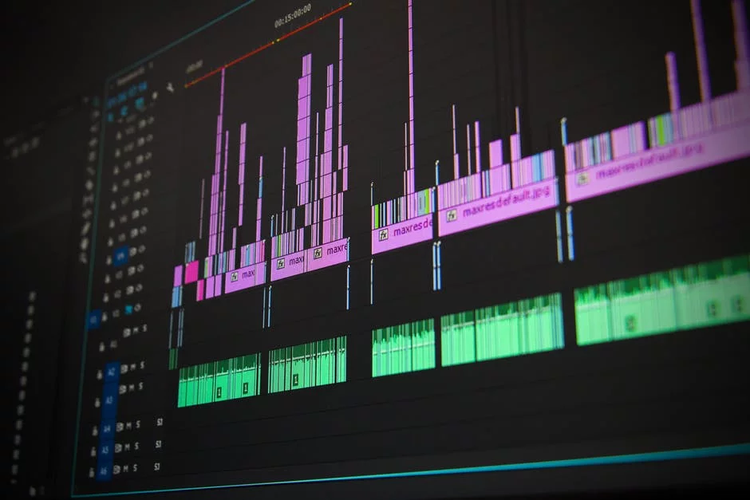

It can be difficult to know what it truly takes to make a film until you've made one. Whether you're an aspiring filmmaker or just want to get an idea of how to make movies, think of this as the beginner's guide to the filmmaking process.
Every movie you've ever seen first starts with an idea in someone's brain. Although things change as a project goes on, the story you come up with in the beginning will serve as the foundation on which everything else will be built. Start thinking about the kind of story you want your film to tell and all the important story elements involved: plot, characters, conflict, etc

The script is where you'll put down the story, setting, and dialogue in linear form. This important tool will be used by the rest of the team to know what's going to happen in the film. You'll also be using your own script as a reference throughout the process as well since you may need to refresh yourself on certain actions, dialogue lines, and more.

A storyboard is a sequence of drawings that represent the shots you plan to film, and can be a critical part of the filmmaking process. We highly recommend this process because it helps you visualize each scene and decide on things like camera angles, shot sizes, etc. You'll discover your storyboard's true value when it helps communicate what you're trying to go for to other people on the set.

You may need to construct sets for a setting you'd like to have. But for scenes where an actual location will do, you'll need to do some scouting to find the best spots. Take a camera with you and do as much traveling as possible, snapping shots of places you think will serve as the perfect setting for particular scenes.
Cinematography is the art and craft of making motion pictures by capturing a story visually. It involves controlling light, camera movement, framing, composition, lens choice, and exposure to create the look and emotional tone of a film.
'
If you thought filming took time, you were wrong. Post-production is when you edit all your footage to create a rough cut of the film. Once done with the rough cut, you'll begin adding things like sound effects, music, visual effects, and color correction. This process will require the use of editing software — if you're not confident, feel free to find/hire an experienced editor.